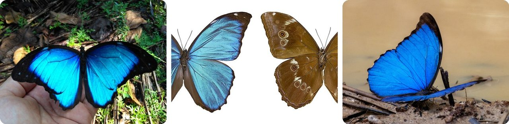
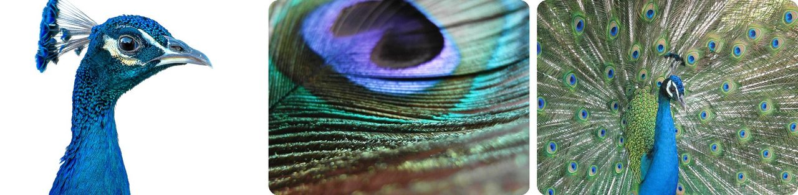
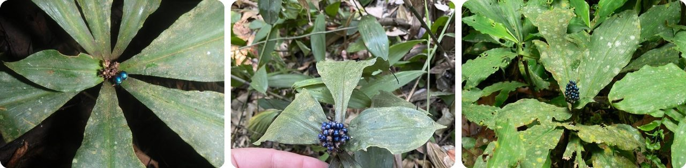
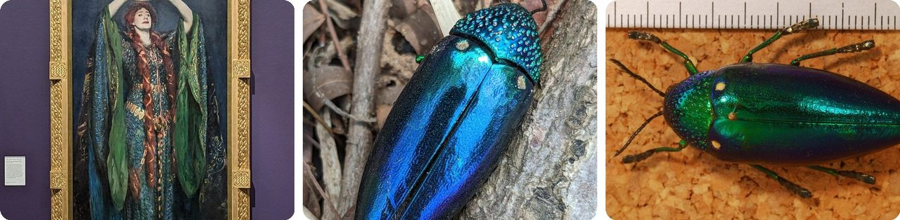
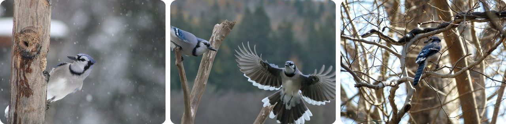
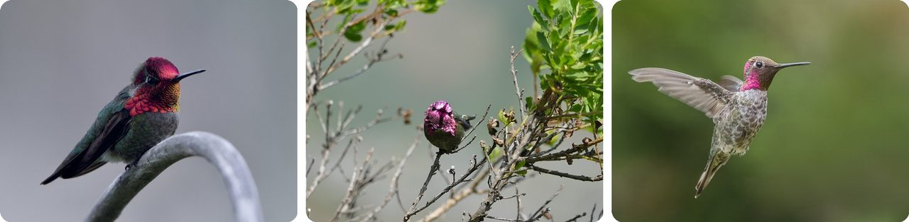
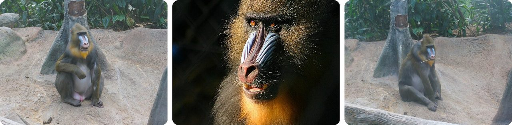
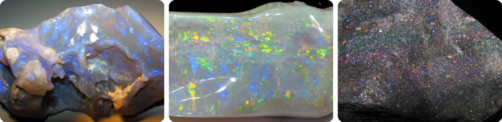
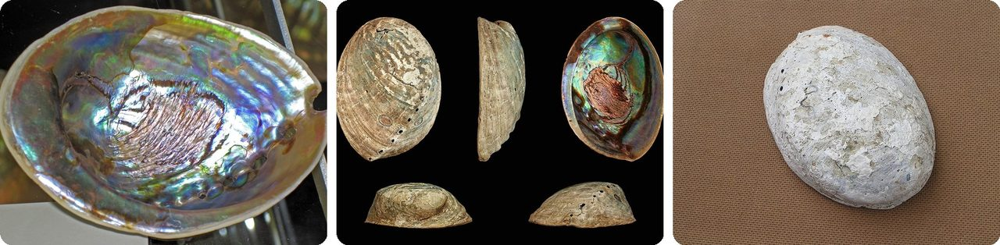
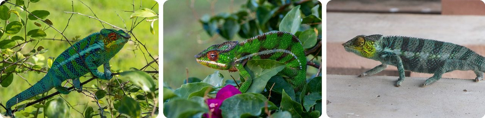

🌍 Top 10 Structural Colors in Nature
Oct 9, 2026
1. 🦋 A blue morpho's wings have no blue paint

Morpho butterflies live in the forests of Central and South America, and the biggest have wings about 20 cm across, as wide as a dinner plate. Their famous blue isn't a pigment at all.
Each wing is covered in tiny scales, and each scale carries rows of ridges shaped like little Christmas trees. Light bounces off layer after layer of those "branches," the blue light waves line up and get stronger, and the other colors cancel out.
The wings reflect up to 70% of the light that hits them, so some males can be seen from about a kilometer away. Flip the butterfly over, though, and the underside is plain brown with eyespots.
Think of it as a mirror that only reflects blue.
2. 🇮🇳 Peacock tail feathers are actually brown

The pigment in an Indian peacock's tail feathers is brown melanin, the same kind of pigment that colors human hair. The blue, turquoise and green come from tiny structures in the feathers that bounce back only certain colors of light.
That's why the colors shift when the bird moves: the angle changes which colors line up. Robert Hooke wrote about these "fantastical" colors in 1665, and Isaac Newton worked out that they came from the feathers' thinness, not from dye.
A full-grown male's train reaches over 2 meters, about as long as a doorway is tall. It even bothered Charles Darwin, who wrote that the sight of a peacock's tail feather "makes me sick!" because he couldn't explain it.
In other words, the fanciest bird on Earth is wearing brown feathers that bend light.
3. 🌍 Africa's marble berry is the brightest blue in any living thing

Pollia condensata, the marble berry, grows in African forests. Its fruit is only about 4 mm wide, the size of a peppercorn, but its blue is the most intense color known in any living thing, stronger than a morpho butterfly's.
The berry's skin cells are lined with see-through fibers of cellulose (the stuff paper is made of) stacked in spirals. Each layer reflects a little blue light, and many layers add up to a shine about 30% as bright as a real mirror.
Each cell's stack is a slightly different height, so up close the berry looks pixelated, with dots of green, purple and red. The fruit has no food value, but birds pick them anyway to decorate their nests, which spreads the seeds.
Basically, it's a fake jewel that gets birds to plant it.
4. 🏴 An actress played Lady Macbeth in 1,000 beetle wings

In 1888, the English actress Ellen Terry played Lady Macbeth in London wearing a green gown sewn with about 1,000 real jewel beetle wings. The dress was meant to look like soft chain armor and the scales of a snake. John Singer Sargent painted her in it a year later.
Beetle wings have been sewn onto clothes and jewelry for centuries in Thailand, Myanmar, India, China and Japan. In Thailand, the beetles live only 3 to 4 weeks as adults, and wings were traditionally collected only from beetles that had died on their own.
The shine lasts because it comes from the wing's shape, not a dye that can fade; old beetle-wing embroidery can still sparkle after the cloth around it has rotted. Terry's dress took more than 1,300 hours of repair work, and it's on display at her old home in Kent.
It's sequins, grown by bugs.
5. 🇺🇸 Crush a blue jay feather and the blue disappears

A blue jay's feathers don't contain blue pigment. The only pigment in them is melanin, which is dark.
The blue comes from the inside structure of each feather, which scatters blue light back at you. Crush the feather and you break that structure, so the blue vanishes and only the dark pigment is left.
Blue jays aren't unusual here. Nearly all the bright blues in animals and plants are made this way, by structure instead of pigment.
The color lives in the feather's shape, not in what it's made of.
6. 🇺🇸 Anna's hummingbird's pink head looks brown in the shade

The male Anna's hummingbird, common on the US West Coast, weighs about as much as a nickel. His crown and throat flash bright pink-red, but out of direct sunlight they can look dull brown or gray.
Inside the feathers, tiny packets of melanin are stacked in layers, with keratin (the protein in your fingernails) between them. They reflect light like half-open window blinds, so the color only lights up at certain angles.
So when he turns to face a female or a rival, his head suddenly blazes pink. Males that eat more protein even grow brighter, shinier crowns.
Basically, it's a headlight he switches on by turning his head.
7. 🇬🇦 A mandrill's blue face is made of bent light

Mandrills are big monkeys from the rainforests of west central Africa, and Gabon is their stronghold. Charles Darwin wrote that no other mammal "is coloured in so extraordinary a manner as the adult male mandrill."
The two colors come from two tricks. The red stripe down the nose is blood vessels showing close to the surface. The blue ridges on the cheeks come from collagen fibers (the protein in skin and tendons) lined up in parallel, which scatter blue light.
The most powerful males have the brightest faces, which helps them stand out against green leaves to other mandrills in groups that can number in the hundreds.
In other words, the red is blood showing through, and the blue is skin bending light.
8. 🇦🇺 Opal flashes colors because of tiny stacked balls

Opal is silica, the same stuff as sand and glass, with water mixed in. In precious opal, the silica forms tiny balls, each about 150 to 300 nanometers wide, a few hundred times thinner than a hair, packed in neat rows.
Those stacked rows act like a grid that splits light. The spacing sends out certain colors, and when you tilt the stone, different colors flash out. The scientist J. V. Sanders showed how this works in the 1960s.
Common opal has the same ingredients but messy packing, so it doesn't flash at all. Opal is now Australia's national gemstone.
Think of it as a box of perfectly stacked marbles that sorts light into colors.
9. 🇳🇿 New Zealand's pāua shell hides a rainbow inside

Pāua (Haliotis iris) is a New Zealand abalone, a big sea snail that clings to rocks in shallow water. Its shell grows up to about 18 cm, a bit longer than a phone.
From the outside, the shell looks pale and chalky. Inside, the mother-of-pearl shines dark metallic blue and green, with flashes of purple, orange and red that shift as you turn it.
The shell is used for jewelry and carvings, and for both Māori and other New Zealanders it has become a symbol of the country.
It's a rock on the outside and a rainbow on the inside.
10. 🇲🇬 Panther chameleons change color by moving tiny crystals

Panther chameleons live in Madagascar, and the males change color fast when they meet a rival or a female. In 2015, scientists in Geneva found out how.
Under the skin there's a layer of cells packed with tiny crystals of guanine (one of the building blocks of DNA), arranged in a neat grid. When the chameleon is calm, the crystals sit close together and reflect blue. That blue mixes with yellow pigment on top, and the skin looks green.
When he gets excited, the gaps between the crystals widen, and they reflect yellow, orange or red instead. A deeper layer of bigger crystals reflects some of the sun's heat, which may help keep him cool.
He doesn't change his paint; he changes the spacing.
Fun fact
The novelist Vladimir Nabokov, who was also a serious butterfly scientist, called morpho wings "shimmering light-blue mirrors." One species, Morpho rhetenor, reflects such a pure blue that ordinary digital photos can't show its true color. Engineers have studied morpho scales to design dye-free paints, fabrics, and anti-counterfeiting features for money. Copying nature's tricks has a name, biomimicry: next time, the cleverest inventions borrowed from animals and plants.
Photo credits (Wikimedia Commons)
- #1: Morpho menelaus occidentalis · Coari - AM, 69460-000, Brasil by (c) Lucas Kaminski, some rights reserved (CC BY), CC BY
- #1: Morpho menelaus huebneri MHNT Male.jpg by Didier Descouens, CC BY-SA 4.0
- #1: Morpho menelaus eberti · Brazil by (c) Thomaz de Carvalho Callado, some rights reserved (CC BY), CC BY
- #2: Pavo cristatus · Kachchh, IN-GJ, IN by (c) Parth Kansara, some rights reserved (CC BY), CC BY
- #2: Peacock Feather Close Up (flickr) by socialspice.de, CC BY 2.0
- #2: Indian Peacock / Pavo cristatus / 印度孔雀(インドクジャク) (flickr) by TANAKA Juuyoh (田中十洋), CC BY 2.0
- #3: Pollia condensata · Amani Nature Reserve, Tanzania by (c) Carrie Seltzer, some rights reserved (CC BY), CC BY
- #3: Pollia condensata · Kibaale National Park, Kibale, Western, UG by (c) tlaloc27, some rights reserved (CC BY), CC BY
- #3: Pollia condensata · Mbeli Bai, Republic of the Congo by (c) Tony King, some rights reserved (CC BY), CC BY
- #4: Ellen Terry as Lady Macbeth 1889 Oil paint on canvas (flickr) by Eljay, CC BY 2.0
- #4: Sternocera aequisignata · Mueang Prachuap Khiri Khan District, Prachuap Khiri Khan 77000, Thailand by (c) portioid, some rights reserved (CC BY), CC BY
- #4: Jewel Beetle (Sternocera aequisignata) (flickr) by berniedup, CC BY-SA 2.0
- #5: Cyanocitta cristata · Maine, US by (c) oksanaetal, some rights reserved (CC BY), CC BY
- #5: Cyanocitta cristata · Kings County, NB, Canada by (c) Blake Ross, some rights reserved (CC BY), CC BY
- #5: Cyanocitta cristata · Washington, District of Columbia, United States by (c) Katja Schulz, some rights reserved (CC BY), CC BY
- #6: Calypte anna · Fort Mason, San Francisco, CA, USA by no rights reserved, CC0
- #6: Anna's Hummingbird. Marin Headlands, 2025-04-14.jpg by Lukehewitt, CC BY-SA 4.0
- #6: Anna's hummingbird (Calypte anna) male in flight Campbell River.jpg by Charles J. Sharp, CC BY-SA 4.0
- #7: Mandrill (Mandrillus sphinx) #1 (flickr) by poplinre, CC BY-SA 2.0
- #7: Mandril.jpg by Malene Thyssen, CC BY 2.5
- #7: Mandrill (Mandrillus sphinx) #2 (flickr) by poplinre, CC BY-SA 2.0
- #8: Precious opal (Lightning Ridge, New South Wales, Australia) 1 (flickr) by James St. John, CC BY 2.0
- #8: Precious opal (Australia) 2 (flickr) by James St. John, CC BY 2.0
- #8: Precious opal in basalt (Tablon Mine, near Erandique, Lempira Department, Honduras) 3 (flickr) by James St. John, CC BY 2.0
- #9: Haliotis iris (blackfoot paua abalone) 2 (flickr) by James St. John, CC BY 2.0
- #9: Haliotis iris 01.JPG by H. Zell, CC BY-SA 3.0
- #9: Haliotis iris shell.jpg by Jan Delsing, Public domain
- #10: Furcifer pardalis · Ambanja, Madagascar by (c) Piotr Lukasik, some rights reserved (CC BY), CC BY
- #10: Furcifer pardalis · Joffreville, Madagascar by (c) Piotr Lukasik, some rights reserved (CC BY), CC BY
- #10: Furcifer pardalis · Nosy Tanikely, Madagaskar by (c) Lennart Hudel, some rights reserved (CC BY), CC BY


_male_in_flight_Campbell_River.jpg){kind=link}